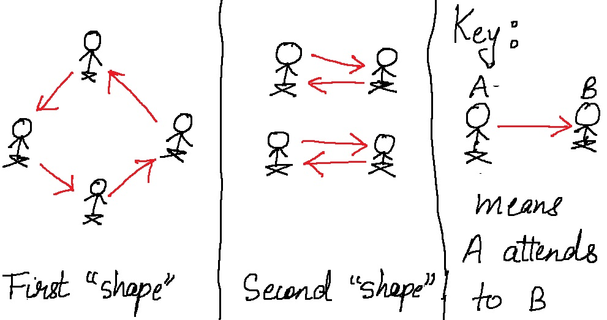

Derangements in Combinatorics (Circle Jerk Problem)
One of the most pertinent questions about life is: how do I make this tiny life of mine, \( 4000 \) weeks on average, as meaningful as possible in that less time? Another is, how many ways can \( 10 \) boys circle jerk each other? Since I'm not qualified to answer the first, let’s take a shot at the second.
First, let's rigorously define what a circle jerk is. A circle jerk of \( n \) individuals is a formation in which each individual takes on responsibility for the pleasure of someone other than themselves, such that all individuals are attended to. In simpler language, you aren't allowed to touch yourself, and you've got to be inclusive of everyone. How many such arrangements are there?
This is actually a really hard problem because of the constraints mentioned above. And it's not terribly obvious where to start. It might be a good idea to examine smaller circle jerks before thinking about the general case. So let’s start there. I'll use \( D_n \) to denote the number of ways for \( n \) boys to form a circle jerk. And you'll be surprised later on that the reason I chose the letter \( D \) (and chose the capital letter) isn't what you'd expect from someone who spent 4 hours perfecting a blog post on circle jerks.
1 person:
Within our constraints, a lonely fuck can’t actually form a circle jerk - since you are not allowed to touch yourself. So \( D_1 = 0 \).
2 people:
If there are two people, their only option is to attend to each other. So \( D_2 = 1 \).
3 people:
If it's me, Chris P. Bacon and Ben Dover, then let's start with me. I have two choices for who I jerk off. Say I chose Chris. If Chris choses me, then Ben has to do himself, which isn't allowed, so Chris has to chose Ben. Now, since Ben is the last person remaining, and no one's attending to me yet, Ben has to pleasure me. How else could this circle jerk have turned out? Well, I could have chosen Ben, then by similar logic Ben has to chose Chris, Chris has to chose me. There's only two ways for this to turn out, so \( D_3 = 2 \).
4 people:
Here’s where things get more interesting. Mathematically speaking, pervert. There are two "shapes" in which \( 4 \) people can configure themselves, as illustrated by the shitty drawing below:
The first way we can count it is the summation formula: First count everything, then exclude \( 1 \) person doing themselves, add back \( 2 \) people, subtract \( 3 \) people, add back \( 4 \) people, and so on. Are there more recursive ways to figure this out? This formula is huge.
The second recursive relationship works like this: say there are \( n \) people in a circle jerk right now, and I want to join in. I can replace any person as follows: See who they are jerking off, remove their hand from there and put it on myself, and then I can jerk off whoever they were jerking off. We’ll call this “entrance by insertion”. The other thing I can do is pick a person I would like to be especially intimate with, and do the following: interrupt everyone’s time of their lives, tell them I want this one guy (we’ll call him Jeremy) all to myself: I jerk Jeremy off and he jerks me off. The rest can do whatever the hell they want. Now, there’s \( D_{n-1} \) ways those folks can jerk themselves off, and there’s \( n \) people I can choose to be intimate with. In the other case, there are \( n \) people in the circle jerk, so \( n \) hands I can place on myself. Once I put a hand on myself, I have to put my hand only where I removed the other from - otherwise poor Barry will be without pleasure. Therefore, this recursive relationship makes sense.
The less intuitive one is this: Why is \( D_{n+1} = n \times D_n - (-1)^n \)? What’s going on with that? What are my \( n \) secret options for joining a circle jerk with \( n \) people? Why is one magically getting added or deleted? Trust me, this isn’t intuitive at all, and took me more than \( 4 \) days thinking about circle jerks to figure out why the hell this was happening, but I finally got it.
Here’s a really interesting fact - the ratio of wank configurations to inclusive circle jerks doesn’t change much as the number of people gets really large.